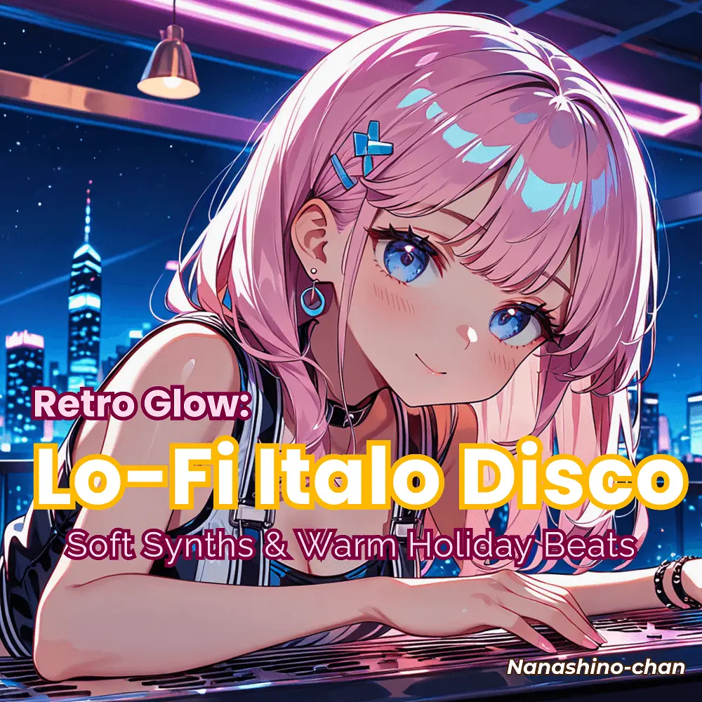

Italo Disco · Lo-Fi · Electronic
Retro Glow: Lo-Fi Italo Disco
Nanashino-chan
Nanashino-chanの「Retro Glow: Lo-Fi Italo Disco」。Italo Disco / Lo-Fi / Electronicを楽しめる全20曲のインストゥルメンタル作品です。「Retro Dreamscape / Neon Nights」などを収録。気になる曲を試聴して、配信サービスでお気に入りを見つけてください。
2025-05-10 リリース · 20 曲 · Instrumental
アルバムを試聴
気になる音楽を、ここから。
曲を選ぶまでジャケットを表示します。試聴にはYouTubeを使用します。
YOUTUBE PREVIEW
試聴する曲を選んでください
曲を選ぶまでジャケットを表示します。試聴にはYouTubeを使用します。
再生できない場合は、配信サービスでアルバムや曲を開いてください。
配信サービスでアルバムを探す
「検索」のリンクは検索結果を開きます。サービス内でアルバムや曲を選択してください。
収録曲一覧 20
- 01Retro Dreamscape
- 02Neon Nights
- 03Starlit Synths
- 04Vintage Echoes
- 05Smooth Disco Vibes
- 06Glowing Memories
- 07Cosmic Waves
- 08Distant Lights
- 09Midnight Pulse
- 10Velvet Synth Melody
- 11Disco Reverie
- 12Soft Fade
- 13Radiant Beats
- 14Timeless Groove
- 15Electric Horizon
- 16Golden Hours
- 17Lush Synthlines
- 18Echoing Nostalgia
- 19Dawn of Disco
- 20Melodic Reflection
SNSで使いたい音源を探す
「Nanashino-chan ＋ 曲名」をコピーして、SNSアプリの音源検索に貼り付けてください。音源の表示は地域やアカウントにより異なります。コピー機能は利用許諾を付与するものではありません。